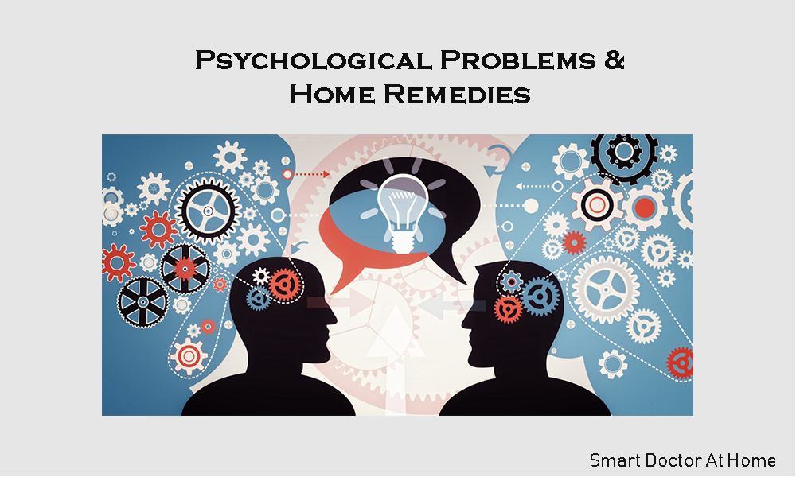

-
Psychological Problems & Home Remedies
Time and health are two precious assets that we don't recognize and appreciate until they have been depleted.
-
~ Denis Waitley
Health is an precious gift from ALLAH ALmighty take care of it before you lose it.
Emotional Fatigue Syndrome
Symptoms
Continual tension and stress, anxiety, depression, loss of interest, no zest for life, inability to cope with everyday problems
Mental and physical fatigue
Loss of confidence, fear of failure, panic attacks, a sense of hopelessness, mood swings, muscle spasms, sensitivity to noise, negative attitudes, and constant worrying.
Causes:
Treatment
Chronic Fatigue
Symptoms:
A continual feeling of exhaustion.
Causes:
Treatment:
Candidiasis(Yeast Infection, Candida, Thrush, Chronic Fatigue Syndrome)
Symptoms:
Causes
Treatment: